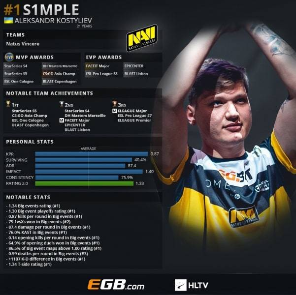
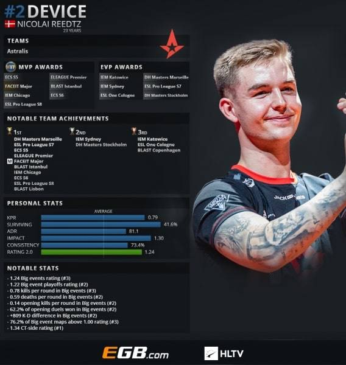
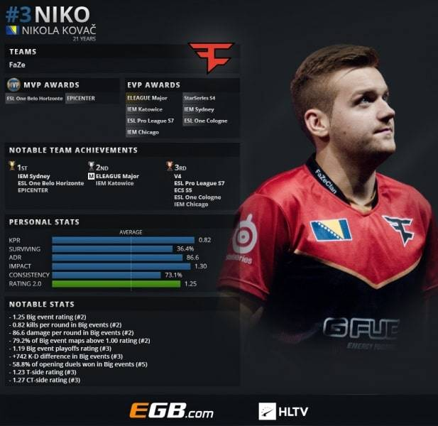
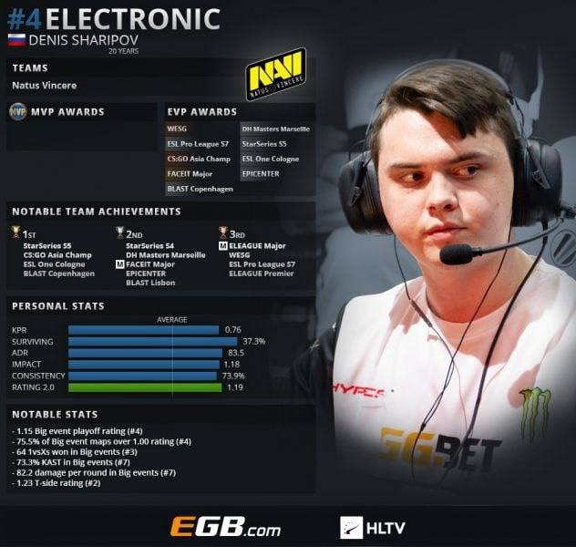
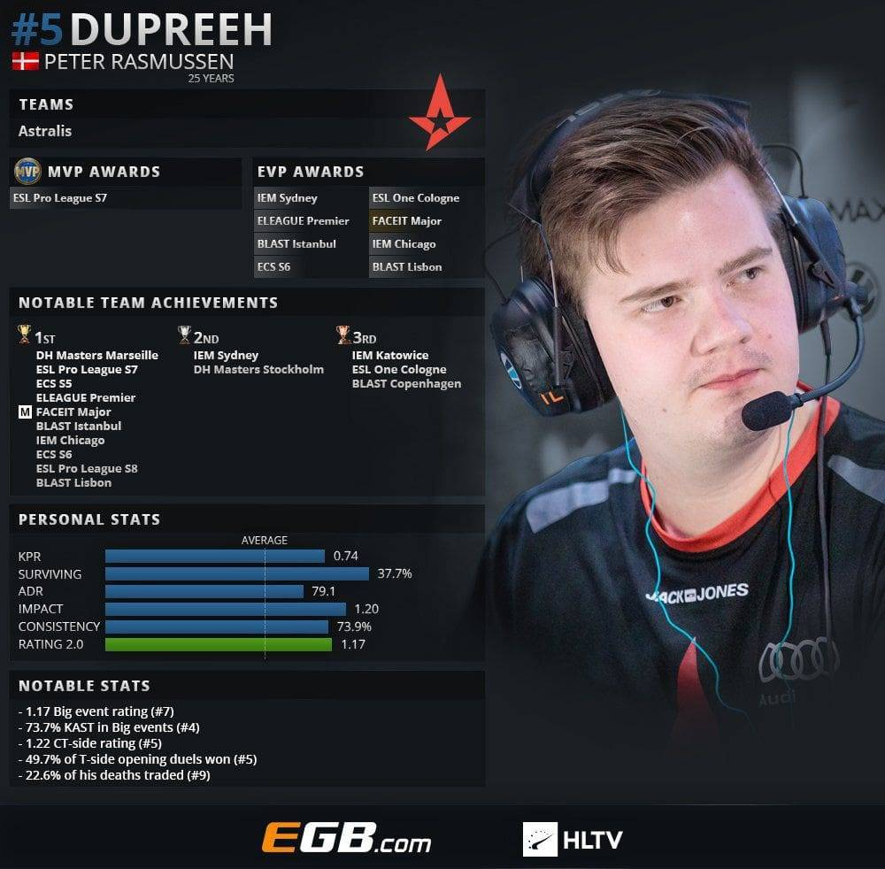
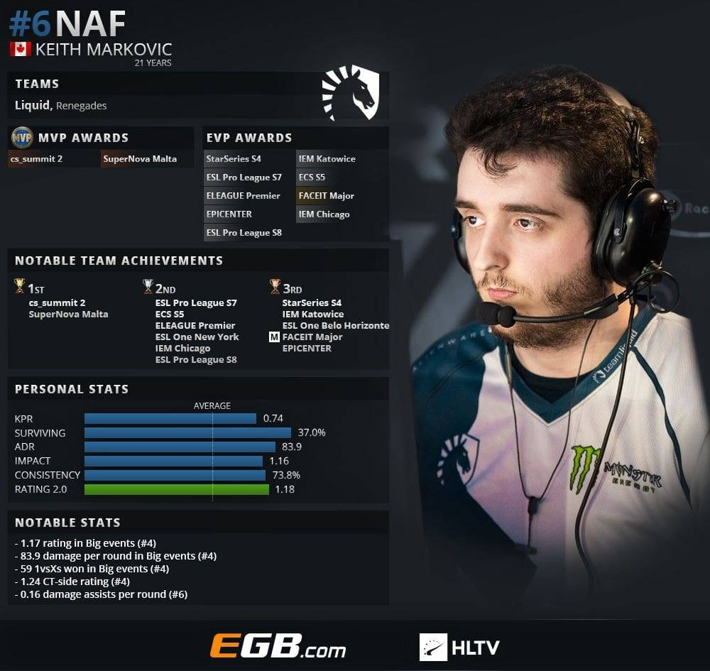
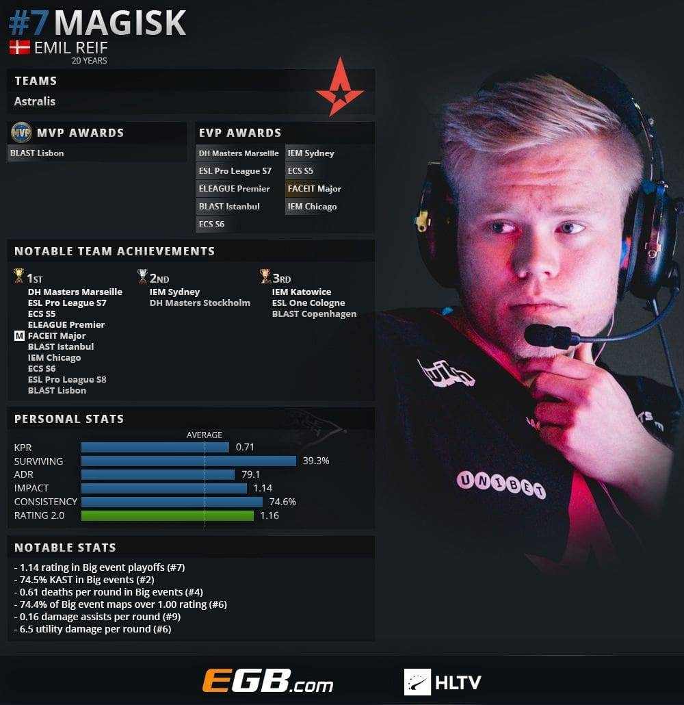
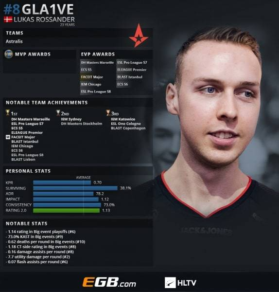
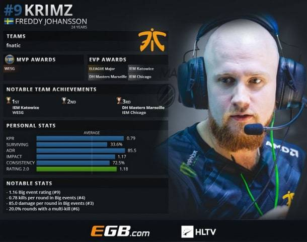
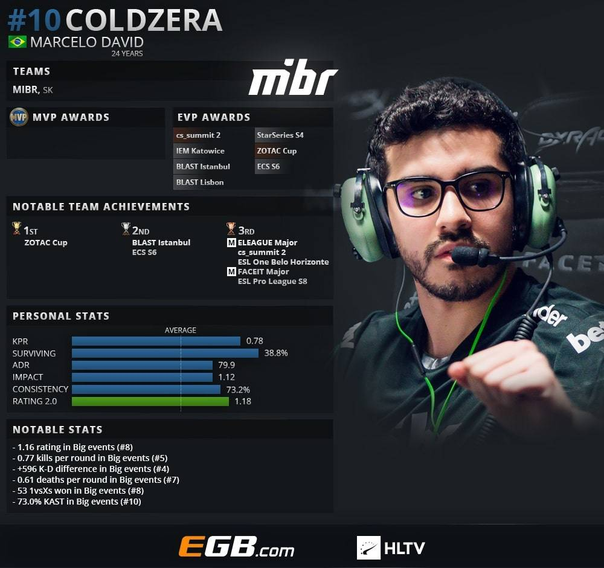

HLTV наконец-то назвала лучшего игрока 2018 года в CS:GO. Им стал представитель NAVI Александр «s1mple» Костылев.
Как только HLTV начал публиковать свой топ-20, сообщество игры сразу выделило двух явных фаворитов: Александра «s1mple» Костылева и Николая «device» Ридтца. Именно они и разыграли звание лучшего игрока 2018-го года в Counter-Strike: Global Offensive.
В итоге, несмотря на всю доминацию Astralis в прошлом сезоне, лучшим игроком стал именно игрок NAVI.
Учитывая, сколько командных трофеев завоевал в этом году device, он вряд ли останется недовольным. К тому же ему всего 23 года, так что у него еще будет множество шансов подняться на вершину топа.
А вот и остальные игроки из топ-10. Здесь 4 представителя Astralis, 2 из NAVI и по одному из Faze, Team Liquid, Fnatic и MIBR.
3 место — Никола «Niko» Ковач.
4 место — Денис «Electronic» Шарипов.
5 место — Питер «Dupreeh» Расмуссен.
6 место — Кит «Naf» Маркович.
7 место — Эмиль «Magisk» Рейф.
8 место — Лукас «gla1ve» Россандэр.
9 место — Фредди «Krimz» Йохансон.
10 место — Марсело «Coldzera» Давид.
Единственным игроком Astralis, кто не попал в топ-10, стал Андреас «Xyp9x» Хойслет. Он расположился на 13-м месте.
Кроме s1mple и Electronic в итоговую двадцатку лучших игроков года никто из СНГ не попал.